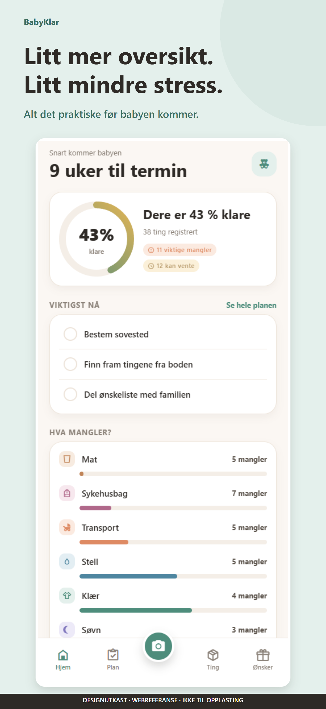
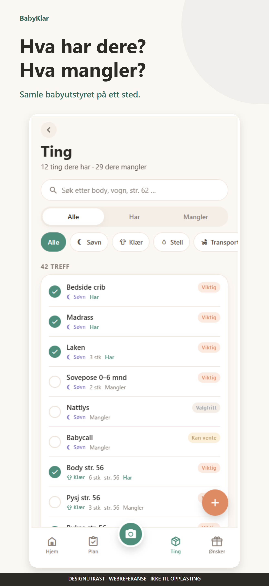
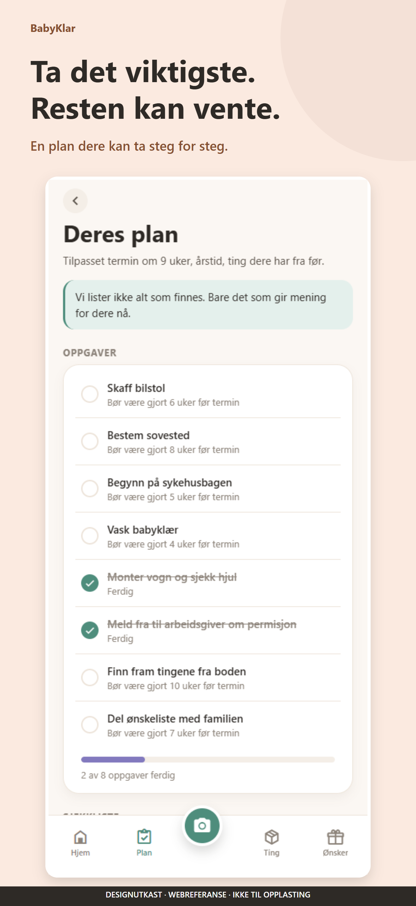
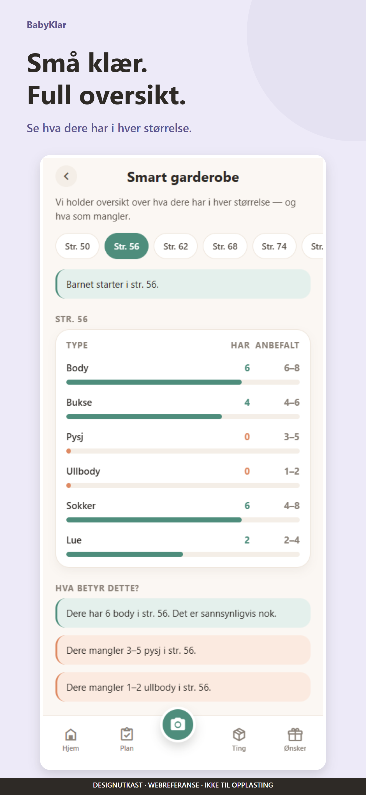
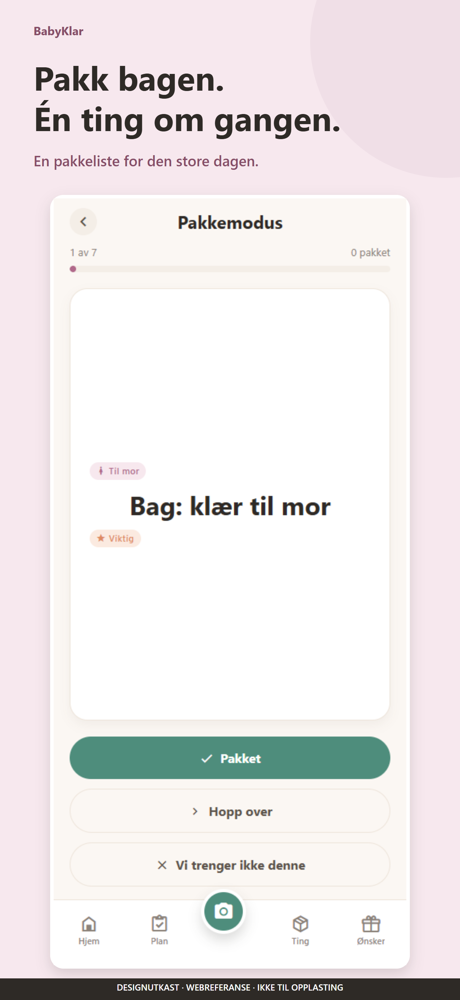
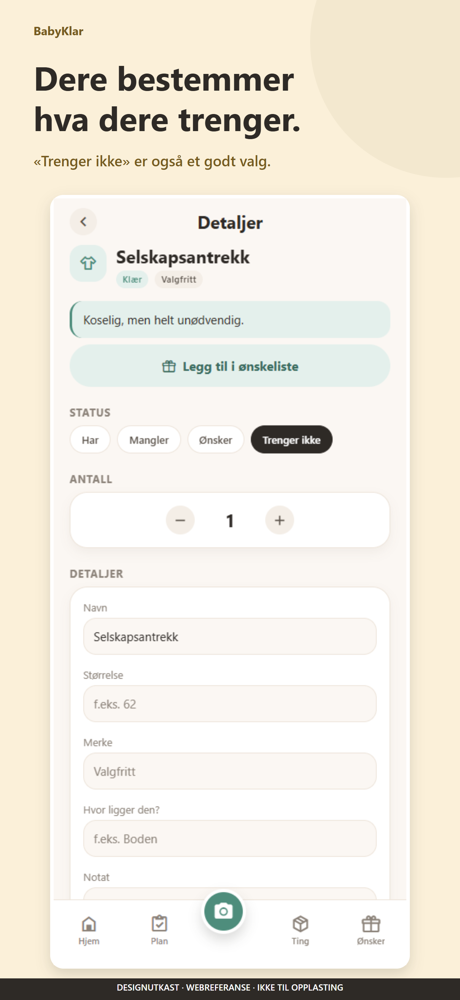

Litt mer oversikt.
Litt mindre stress.
Butikktekster, bildedesign og grunnlag for en ryddig App Review. Gratis lansering på norsk bokmål. Utgiver: Snorre Olimstad.
MATERIELL KLARGJORT · APPEN HAR ÅPNE LANSERINGSHINDREKodevurderingen gjelder 2fe9842, lest 20. oktober 2026. Senere samme dag er App Store Connect-utkastet fylt ut og kontrollert, og build 1.0.0 (5) er lastet opp til TestFlight etter utgivers ønske. Apple har prosessert builden, men TestFlight-binærfilen og produksjonens AI-drift er fortsatt ikke funksjonstestet. Ingen av de identifiserte funksjons- eller personvernfeilene er rettet. Apple avgjør godkjenning; gode tekster alene løser ikke disse manglene.
Faktisk lagret i App Store Connect
Åpne utkastet: butikkversjon 1.0.0, build 4 (0.1.0), norsk navn, undertittel og butikktekst, norsk som eneste og primære språk, Lifestyle / Productivity, gratispris, kun Norge, manuell publisering og ingen påkrevd innlogging. Kontaktfeltene er utfylt privat hos Apple. Mac- og Vision Pro-tilgjengelighet er slått av etter utgivers valg.
Add for Review ble forsøkt, men Apple svarte «Unable to Add for Review». Det mangler skjermbilde for 13-tommers iPad, skjermbilde for iPhone med Dynamic Island (medium), Content Rights Information, App Privacy, aldersspørreskjema og norsk Support URL. Endelig personvern-URL og rettet utgivelsesbuild må også på plass. Status er fortsatt Prepare for Submission. Ingenting er sendt til Apple-review.
Review Notes er bevisst merket som et utkast med åpne lanseringsmangler; ferdigstill notatene først etter at utgivelsesbuilden er korrigert og verifisert.
TestFlight 1.0.0 (5) er lastet opp
Kontrollert 20. oktober 2026: EAS-builden og opplastingen til Apple er fullført. Apple viser 1.0.0 (5), ferdig prosessert, med status «Ready to Submit» og tilknytning til den eksisterende interne gruppen «Team (Expo)» med én tester. Ingen nye testere eller grupper er lagt til.
Åpne TestFlight-builden · EAS-build · EAS-opplasting. Kilderevisjon: 3643dc5, pushet på ai-skann-og-forenkling.
Åpne TestFlight på iPhone eller iPad med den eksisterende testerens Apple-konto, og installer eller oppdater BabyKlar. Bruk testmatrisen nedenfor. Dette er kun en testopplasting, ikke en offentlig App Review-innsending. App Store-utkastet har fortsatt build 4 (0.1.0) valgt; velg den endelige utgivelsesbuilden etter retting og native testing.
Posisjonen som skiller appen ut
Primærmålgruppe: vordende foreldre i Norge som vil samle utstyr, arvede klær og gjøremål på ett sted. Sekundært: familier med barn fra før og nybakte foreldre.
Led med nytten, ikke teknologien: oversikt → prioritering → mindre unødvendige kjøp. «Trenger ikke» er appens tydeligste særpreg. Vis det. AI, offentlig ønskeliste og partnersynk er ikke del av salgsløftet i denne pakken.
1. Klipp og lim i App Store Connect
Alle felt som strukturert JSON. Velg lokaliseringen Norwegian; teksten er bokmål. Tegn er kontrollert, og søkeord er kontrollert som UTF-8-byte, ikke bare tegn. Navnet må fortsatt være tilgjengelig i App Store Connect, og eventuelle navnerettigheter må avklares.
Ingen konkurrentnavn eller unødvendige mellomrom. Utvalget er en relevansbasert start, ikke dokumenterte søkevolumer eller løfte om rangering. Følg faktisk konvertering i App Analytics etter lansering.
| Felt | Anbefaling / handling |
|---|---|
| Kategori | Lifestyle, sekundært Productivity. Ikke Medical eller Kids-kategorien for å få trafikk. Dette er et voksenrettet planleggingsverktøy. |
| Pris og tilgjengelighet | Gratis, Norge først. Ingen IAP eller abonnement. Ikke opprett fiktive kjøpsprodukter. Pris omtales i beskrivelsen, ikke i navn, undertittel eller skjermbilder. |
| Copyright | 2026 Snorre Olimstad, forutsatt at dette stemmer med rettighetshaver og rettighetsåret. Apple legger til ©-symbolet. |
| Versjon | TestFlight-build 5 rapporterer 1.0.0 og er ferdig prosessert av Apple. App Store-utkastet har fortsatt build 4 (0.1.0) valgt. Eksisterende binærfiler kan ikke omdøpes. Velg den endelige utgivelsesbuilden først etter retting og native testing; versjonsnummeret alene løser ikke uferdig funksjonalitet. |
| What's New | Ikke påkrevd ved første utgivelse. Senere: beskriv bare reelle endringer. Et valgfritt velkomstutkast finnes i JSON-filen. |
| Support URL | Mangler publisert adresse. Supportside med oppgitt e-post er laget. Publiser på et domene/nettsted du kontrollerer. Ikke bruk en mailto-adresse i URL-feltet. Kontrollér personvernlenken før publisering. |
| Privacy Policy URL | Mangler publisert og verifisert erklæring. Personvernutkast med tydelig markerte avklaringer. Ikke publiser utkastet uendret. Lenken skal også finnes lett tilgjengelig i appen. |
| Marketing URL | Valgfri. La stå tom til en reell produktside finnes. Ingen domeneeierskap er antatt. |
| App Review-kontakt | Snorre / Olimstad / snorre.olimstad@gmail.com. Telefonnummer med landskode er lagt inn og kontrollert i Apples private review-felt. Det er ikke kopiert til dette offentlige tekstmaterialet. |
2. Bildene som selger opplevelsen
Åpne skjermbildestudioet for å importere ekte iOS-skjermbilder og eksportere PNG. Se også alle seks utkast samlet i ett bilde. Bildene nedenfor er ferdig utformede designutkast med webreferanser; synlig utkastmerking skal ikke fjernes for å få dem til å se ut som iOS-opptak.













Ta de endelige opptakene slik
- Bruk builden som faktisk skal sendes til review, etter at feilene nedenfor er rettet. Bruk fiktive, representative data uten navn på ekte barn, private bilder eller meldinger. Ikke manipuler grensesnittet for å skjule mangler.
- Ta vertikale skjermbilder fra iPhone. Apples validering av akkurat dette utkastet krever iPhone med Dynamic Island (medium): bruk 1206 × 2622 eller 1179 × 2556. Dette målformatet er nå førstevalg i studioet. Den store Dynamic Island-gruppen godtar 1320 × 2868, 1290 × 2796 eller 1260 × 2736. For eldre store Face ID-modeller finnes også 1284 × 2778 / 1242 × 2688. De eksisterende designutkastene er 1320 × 2868, ikke ferdige filer for den påkrevde mediumgruppen.
- Appen har
supportsTablet: true. Beholdes dette, ta egne iPad-opptak. 13-tommersgruppen godtar 2064 × 2752 eller 2048 × 2732. Ikke bruk forstørrede iPhone-opptak som iPad. - Slå av forstyrrende varsler, lukk tastaturet der det ikke trengs, vent til oppstartsanimasjonen er ferdig, og kontroller alle skjermkanter. Behold autentiske statuslinjer og proporsjoner. Overfør originalfilene uten komprimering fra meldingstjenester.
- Importer hvert bilde i studioet, velg riktig format, og kontroller teksten i appen. Eksport er sperret for medfølgende 440 × 956-webreferanser. Godkjenn innholdet før eksport. Formatkontrollen kan ikke bevise at en fil er autentisk.
- Last opp 6 bilder i nummerrekkefølge. Apple godtar 1–10 per nødvendig skjermbildegruppe. Bruk PNG/JPEG, heldekkende bakgrunn og riktig størrelse. Kontroller nedskalert visning på produktsiden.
Ikon: Behold dagens originale 1024 × 1024-ikon; det er gjenkjennelig og matcher paletten. Det legges inn via builden. Kontroller opasitet og at riktig ikon faktisk finnes i den valgte builden. Ikke legg på «Gratis», review-stjerner eller Apple-merker.

Video: Ikke nødvendig ved første innsending. Prioriter seks gode skjermbilder. En senere 15–30 sekunders App Preview bør vise faktiske opptak av Hjem → statusendring → Plan → pakkemodus, med korte norske tekstoverlegg. Ingen oppdiktet appflyt, stockvideo av babyer eller rettighetsbelagt musikk.
3. Konkrete hindringer før innsending
Dette er en målrettet gjennomgang for lansering, ikke en full sikkerhetsrevisjon. «Må rettes» betyr høy risiko for en uferdig eller misvisende brukeropplevelse; det er ikke en garanti for Apples vedtak.
| Prioritet | Funn i lokal kildekode | Hva som må gjøres / hva som skal bevises |
|---|---|---|
| Må rettes Personvern / AI 5.1.1, 5.1.2 | Baby, linje 202 sier «ingen deling med tredjepart». Skanningsklienten sender bilde og utstyrslisten til server; API-ruten videresender bilde og utstyrsnavn til OpenAI. Bildevalg starter analysen uten en egen tredjepartsavklaring. Ingen lenke til full personvernerklæring i personvernkortet. | Rett informasjonen, publiser erklæring, legg inn lett tilgjengelig lenke og innhent eksplisitt tillatelse før overføring til tredjeparts-AI. Opplys både om bilde og utstyrsnavn. Å godkjenne AI-forslaget etterpå er ikke tillatelse til opplastingen. Test at «Ikke nå» gir null nettverkskall til analyse og at manuell bruk fortsatt fungerer. Alternativt: fjern skanningen fra hele utgivelsen. |
| Må rettes Deling / demo 2.1, 2.2, 2.3 | Ønsker, linje 22 deler den faste lenken https://babyklar.no/o/demo-4f2a. Reservasjonsskjermen er lokal; partnersynk omtales som fremtidig i Baby. Onboarding, hjelpetekst, oppgaver og varedetaljer lover fortsatt deling/reservasjon. | For en enkel førsteversjon: behold eventuelt en ærlig lokal ønskeliste eller reell tekstdeling, men fjern nettlenken, reservasjon og partnersynk-løfter fra alle innganger. Alternativt: bygg og test ekte deling fra en annen enhet uten appen. Å bare utelate funksjonen fra butikkteksten er ikke nok. |
| Må rettes Helse / sikkerhet 1.4 | Katalogen, linje 97 begrunner at en sterilisator er valgfri med at vanlig oppvask stort sett holder. Dette samsvarer ikke med Helsenorges råd om rengjøring og sterilisering av flasker. Katalogen har også generelle trygghetsutsagn om søvn, hud og annet utstyr. | Fjern eller omskriv udokumenterte råd og få relevante råd faglig kontrollert. Skill mellom «eget apparat er valgfritt» og behovet for hygienisk rengjøring/sterilisering. Lenke til Helsenorge. En generell «ikke medisinske råd»-tekst reparerer ikke feil innhold. |
| Må avklares Produksjon / AI 2.1, 2.3 | Produksjonsprofilen peker mot https://babyklar.expo.app. Ved manglende konfigurasjon / HTTP 503 kan skanningen vise tilfeldige eksempelforslag som kan lagres. Lokal kildekode beviser ikke at produksjonens tjeneste er operativ. | Hvis AI beholdes: test faktisk signert release-build mot produksjons-API med et ikke-personlig bilde du eier, og verifiser at resultatet gjelder akkurat bildet. Test frakoblet nett, tidsavbrudd og feil. Ikke bruk tilfeldige eksempelforslag som erstatning for en mislykket analyse i produksjon. Sørg for drift, kostnadskontroll og tilgjengelighet under review. |
| Må avklares Data og sletting 5.1.1 | Lagringen bruker babyklar.state.v6; kommentaren sier at eldre nøkler blir liggende. Nullstilling lager ny lokal tilstand. Eksporterte kopier, bildebuffer, gamle nøkler og leverandørlogger er ikke dokumentert slettet av knappen. | Test ren installasjon og oppgradering fra tidligere versjoner. Verifiser hvilke data som faktisk fjernes, og rett «Slett alle lokale data» hvis den ikke gjør det som loves. Opplys separat om eksporterte kopier og logger. Ikke erklær at all behandling stopper eller at alle data slettes bare fordi UI-et er tomt. |
| Må kontrolleres Ferdig produkt 2.1, 2.2 | Synlig «BabyKlar demo 0.1», «Nullstill demoen» og en skjult femtrykksbryter for eksempeldata i Baby. | Avklar hva som hører hjemme i utgivelsen. Fjern demo-only funksjonalitet eller beskriv legitim eksempelmodus tydelig i Review Notes. Ikke bare bytt ordet «demo» og la uferdige funksjoner bli igjen. Normal review må fungere uten skjulte brytere. |
| Må kontrolleres Build / iPad | Appkonfigurasjonen støtter iPad. Denne gjennomgangen har bare kjørt webappen, ikke iOS/iPadOS-binærfilen. | Test på ekte iPhone og iPad, inkludert oppstart, datovelger, bildebibliotek, kameraavslag, deling, lokal lagring og sletting. Kontroller riktig SDK, native privacy manifests, required-reason APIs og formålstekster i den ferdige builden. At Expo er nytt, er ikke i seg selv bevis. |
Forslag til ny AI-tillatelsestekst – ikke implementert
Analysere bildet med OpenAI? Bildet du har valgt og navn på utstyr i oversikten sendes via BabyKlars server til OpenAI for å foreslå hvilke ting bildet viser. Ikke bruk bilder av personer, dokumenter eller etiketter med personopplysninger. Dette er valgfritt. Du kan registrere ting manuelt uten å sende et bilde. Les personvernerklæringen om mottakere, lagring og sletting. [Send og analyser] [Ikke nå] [Personvern]
Før bruk må teksten tilpasses verifisert drift og suppleres med konkrete opplysninger om relevant lagring. Dialogen må vises før første overføring og tillatelsen må kunne avslås/trekkes tilbake. Kameraadgang alene er ikke tillatelse til tredjepartsbehandling.
4. App Privacy – ikke velg «Data Not Collected» på gjetning
Apples «collect» betyr overføring ut av enheten som gjør data tilgjengelig lenger enn det som trengs for å behandle forespørselen i sanntid. At egne appdata ligger i AsyncStorage, sier ikke hva hosting eller OpenAI oppbevarer. Å ikke ha innlogging betyr heller ikke automatisk «Data Not Linked to You».
| Dataflyt | Foreløpig vurdering | Før du svarer Apple |
|---|---|---|
| Termin/fødselsdato, valgfritt navn, klær, oppgaver | Lagres lokalt i koden. Lokal behandling alene er normalt ikke innsamling til Apples etikett. Graviditetsopplysninger kan likevel være sensitive personopplysninger. | Kontroller faktisk release-build, SDK-er, sikkerhetskopiering og logger. Ikke velg Health automatisk bare fordi termin lagres lokalt; vurder den faktiske overføringen. |
| Bilder til AI | Aktuell type: User Content → Photos or Videos. Formål: App Functionality. OpenAIs standard misbrukslogger kan oppbevares utover sanntidsbehandling. | Bekreft kontoinnstillinger, logglagring og mottakere. Utgangspunktet er at dette må deklareres hvis slik oppbevaring skjer. Ikke bruk unntak for «frivillig» bare fordi brukeren valgte bildet. |
| Utstyrsnavn til AI | Aktuell type: User Content → Other User Content, formål App Functionality. Fritekst kan inneholde personopplysninger. | Undersøk hva server, OpenAI og logger faktisk lagrer. Vurder eventuelle andre typer hvis slike opplysninger bevisst samles inn. Ikke påstå anonymitet uten dokumentasjon. |
| IP-adresse, logger og diagnostikk | Kan behandles hos hosting/leverandører selv om appkoden ikke har analyseverktøy. | Hent driftsfakta fra leverandørene: typer, formål, tid og kobling. Ikke kryss av Device ID, Location eller Diagnostics automatisk; kartlegg faktisk bruk. |
| Support via e-post | E-post og innhold behandles ved en henvendelse. | Beskriv dette i erklæringen. Apples valgfrie deklareringsunntak har flere samtidige vilkår; en supportadresse alene avgjør ikke etiketten. |
| Linked to You / Tracking | Ingen kontoinnlogging eller annonseflyt funnet i de aktive funksjonene som ble lest. Ingen påvist ATT-utløsende sporing her. | Kontroller leverandører og build før du svarer. Ikke legg inn en unødvendig ATT-dialog som erstatning for AI-tillatelse. Tracking handler blant annet om kobling på tvers av andre selskapers apper/nettsteder for annonsering/måling eller datameglere. |
Tre ulike ting: offentlig personvernerklæring, App Privacy-svar i App Store Connect og native privacy manifests/required-reason APIs. Ingen av dem erstatter de to andre. Biblioteker kan bidra med egne manifests; fravær av en egen fil i repoet beviser ikke en feil i builden.
5. Praktisk rekkefølge fram til Submit for Review
- Velg og ferdigstill funksjonene. Rett hindringene over. Oppdater hjelp, onboarding, varsler og tomtilstander, ikke bare forsiden. Behold butikkteksten sann mot den faktiske utgivelsen.
- Gjør support og personvern ferdig. Publiser på fungerende HTTPS-adresser uten innlogging. Sjekk dem på en annen enhet. Fullfør alle gule felt i personvernutkastet før publisering. Sett inn URL-er i appen og App Store Connect. Ingen konto i denne appen betyr at Apples krav om kontosletting normalt ikke utløses; lokal sletting må fortsatt fungere. Ny konto/auth endrer vurderingen.
- Bygg riktig release. Kontroller Bundle ID
no.babyklar.app, utgivernavn, versjon, buildnummer, appikon og signering. Apples publiserte krav fra 28. april 2026 er Xcode 26 eller nyere og relevant iOS/iPadOS 26 SDK eller nyere. Verifiser buildloggen, ikke bare package.json. Velg en ferdig prosessert build i App Store Connect. - Test den faktiske binærfilen. Bruk testmatrisen nedenfor, også på iPad hvis støtten beholdes. Webkjøringen her er ikke erstatning for native testing. Avklar om appen skal distribueres på Mac med Apple silicon / Apple Vision Pro før du lar den være tilgjengelig der.
- Fyll App Information. Navn, lokalisering, kategorier, rettigheter til innhold og aldersspørreskjema. Målgruppen er voksne, men aldersmerkingen bestemmes av faktisk innhold. Ikke velg Kids-kategorien fordi appen handler om babyer, eller svar automatisk «None» på helse-/velvære-/medisinsk innhold uten å kontrollere katalogen. Ikke lov en 4+-merking på forhånd.
- Fyll App Privacy og eksport. Bruk verifiserte driftsfakta.
usesNonExemptEncryption: falseer satt i koden; vanlig HTTPS kan være unntatt, men den faktiske krypteringsbruken må kontrolleres før du bekrefter eksportklassifisering. - Velg pris og land. Gratis og Norge. Fullfør påkrevde avtaler og eventuelle kontokrav Apple viser. Hvis du senere åpner EU-land, avklar trader-status og verifiseringskrav etter Digital Services Act. Ikke anta at en personlig Apple-konto automatisk betyr «non-trader»; Norge er ikke et EU-medlemsland.
- Legg inn butikktekst og ekte bilder. Bruk materialet over, men fyll manglende URL-er. Last opp de endelige iPhone- og eventuelle iPad-bildene, ikke webutkastene. App Preview-video og Marketing URL kan vente.
- Fullfør App Review Information. «Sign-in required»: nei så lenge ingen konto kreves. Bruk engelsk utkast til Review Notes, fjern alle klammer/alternativer og beskriv nøyaktig AI- og ønskelistefunksjon i builden. Oppgi telefon. Ikke påstå tester eller rettelser som ikke er gjort. Del aldri servernøkler med reviewer.
- Velg manuell publisering. Da kan du kontrollere godkjent produktside før lansering. Legg riktig versjon til review og fullfør den siste «Submit for Review»-handlingen; å laste opp til TestFlight sender ikke appen til offentlig App Review.
Testmatrise for TestFlight-builden
| Scenario | Forventet bevis før innsending |
|---|---|
| Ren installasjon / kaldstart | Oppstartsskjermen forsvinner; onboarding kan fullføres uten konto; ingen utviklermeny, tom feilside eller demo-lenke. |
| Første barn / barn fra før / født | Gyldige datoer, riktig retning på termin/fødselsdato og passende oppgaver. Datovelger fungerer på iPhone og iPad. |
| Har / Mangler / Trenger ikke | Endring gjenspeiles i Plan, Hjem og garderobe. Antall og status er beholdt etter full avslutning og ny oppstart. |
| Manuell registrering uten nett | Lokale kjernefunksjoner fungerer. Ikke krev bildeopplasting for å registrere noe. |
| AI, hvis beholdt | Tillatelse før opplasting; avslag sender ingenting; avbrutt bildevalg gjør ingenting; kameraavslag håndteres; faktisk bilde gir relevant resultat; korrigering og lagring virker. Feil/nettbrudd gir tydelig feil, ikke tilfeldige lagringsbare svar. |
| Ønsker | Alle gjenværende funksjoner virker som beskrevet. Nettbasert reservasjon må bevises fra en annen enhet uten app, ellers ikke være tilgjengelig eller lovet. |
| Sykehusbag / pakkemodus | Én ting kan pakkes, fremdrift oppdateres, tilbak navigasjon og ferdigtilstand fungerer. |
| Sikkerhetskopi | Eksport, avbrutt delingsark, gyldig import og ugyldig import håndteres. Ingen tap av eksisterende data før bekreftet import. |
| Sletting og oppgradering | Riktig innhold fjernes også etter restart og oppgradering; eldre lagringsnøkler og eventuelle bilder undersøkes; eksterne kopier/loggers begrensninger forklares. |
| Tilgjengelighet / iPad | Større tekst, VoiceOver, kontrast, trykkflater, redusert bevegelse, tastatur og skjermkanter kontrolleres. Kryss bare av Accessibility Nutrition Labels som faktisk er dokumentert testet. |
| Support / personvern | Begge HTTPS-adresser fungerer uten konto og fra appen. App Privacy og all personvern-/AI-tekst er innbyrdes konsistent. |
6. Etter godkjenning: forbedre uten å overselge
- Start med dette rolige, konkrete bildesettet. Etter tilstrekkelig trafikk kan du teste alternativ førstetekst: «Hva trenger dere egentlig?», med samme reelle Hjem-skjerm.
- Bruk App Store Connect Product Page Optimization for bilde-/ikonvarianter der det støttes. Test én tydelig hypotese om gangen. Ikke legg til sporing bare for å få grunnleggende App Store-statistikk.
- Ikke kjøp anmeldelser eller lokk med gaver for gode vurderinger. Hvis en vurderingsforespørsel bygges senere, bruk Apples systemdialog etter en naturlig mestringshendelse, ikke ved første oppstart, og ikke bare for fornøyde brukere.
- Etter lansering: følg produktsidevisninger, nedlastingskonvertering, tekniske feil og henvendelser. Sammenlign over representative perioder, ikke noen få klikk.
Kilder og avgrensning
Offisielle kilder lest 20. oktober 2026. Apple kan endre felter og krav; bruk det aktive skjemaet ved innsending.
- App Review Guidelines – særlig 1.4, 2.1, 2.2, 2.3, 5.1.1 og 5.1.2.
- Platform version information – tekstgrenser, support og metadata.
- Screenshot specifications – formater og enhetsgrupper.
- App privacy details – innsamling, datatyper og unntak.
- Set an app age rating – spørreskjema og regional klassifisering.
- Upcoming requirements – publiserte SDK- og alderskrav.
- OpenAI API data controls – generelle lagrings-/treningsvilkår, ikke BabyKlars kontoinnstillinger.
- Helsenorge: rengjøring av flasker – grunnlag for den konkrete innholdsmerknaden.